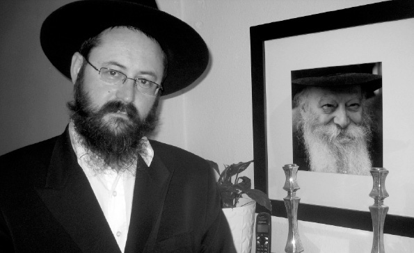

The Chassidic Shabbos Starts on Sunday
What is a “Chassidic Shabbos” and why isn’t it enough just to “observe the Shabbos”? To answer this and other questions, we turned to Rabbi Asher Gershovitz, rosh mesivta and mashpia of Yeshivas Chassidei Chabad in Tzfas. In the midst of a regular weekday, we ascended into the atmosphere of Shabbos. “Come, let us go to welcome the Shabbos.”
Translated by Michoel Leib Dobry

“On many occasions during my year on ‘k’vutza’ – 5746, I was privileged to see the Rebbe’s face on Friday just before the onset of Shabbos as he left his room in 770 on his way to see the Rebbetzin, who would spend Shabbos in the library. When he returned to 770 from the library, he appeared totally different. His face shone with a distinct sparkle, unlike anything seen during the rest of the week. This is perhaps just a chassidishe feeling, but it’s something that we, as T’mimim, spoke about during those days.” This descriptive reminiscence was provided by Rabbi Asher Gershovitz, rosh mesivta and mashpia at the Yeshivas Chassidei Chabad-Lubavitch in Tzfas.
We spoke with Rabbi Gershovitz about Shabbos as “chassidishe baalei battim” who want to improve the atmosphere at home during Shabbos, to feel the uniqueness and special character of “the seventh day” and to experience the spiritual pleasure that Shabbos has to offer.
It turns out that the whole foundation for receiving the light of Shabbos depends on preparation, as in the well-known saying, “Only one who labors on Friday shall eat on Shabbos.” We’re not just talking about buying meat and fish, rather primarily about spiritual toil and effort. “Anyone who davens and learns Chassidus properly during the week will merit to have his Shabbos appear different. Thus, the preparations for Shabbos begin on Sunday,” said Rabbi Gershovitz.
“THE NATION WHICH HALLOWS THE SEVENTH DAY”, NOT “THE NATION THAT PUTS ON T’FILLIN”
A Jew can easily make a mistake and think that Shabbos is merely one of the 613 mitzvos, especially since the mitzvah of Shabbos is only the fourth commandment given at Mt. Sinai. However, this is just an external aspect. Anyone who learns Chassidus will see how it provides a most unique illumination of the concept of Shabbos, as it does with many other concepts in Torah. Shabbos occupies a fundamental place in connection with the relationship between a Jew and his Creator. While Shabbos includes only five mitzvos of the Torah, it is truly far more than that. It is a profound symbol of the connection between a Jew and Alm-ghty G-d, as is written, “a sign between Me and you”.
The People of Israel and Shabbos are connected with an inseparable bond, far more than with any other mitzvah of the Torah. Shabbos affirms the unique role of the Jewish nation, as is written, “the nation which hallows the seventh day.” It doesn’t say “the nation that puts on t’fillin,” nor “the nation that puts up mezuzos” – it only makes this special reference in regard to Shabbos.
PREPARING FOR SHABBOS ALL WEEK LONG
What is a “Chassidic Shabbos”? What makes it different from a Shabbos observed by a Jew who hasn’t learned Chassidus?
For anyone who doesn’t learn Chassidus, Shabbos is just another mitzvah, no different from t’fillin or mezuza. It has a set time, and when the time passes, “there is no point in offering the sacrifice.” On Motzaei Shabbos we make Havdala over a cup of wine and then devote ourselves completely to mundane affairs.
However, a Chassid who learns Chassidus knows that this is not the case. We are all familiar with the differing opinions of Hillel and Shammai: one would buy better meat each day in honor of Shabbos, while the other would say “each day [He] loads us” as a preparation for Shabbos. Yet, this is merely the external aspect of Shabbos. As in all things, Chassidus teaches us to look primarily at the inner level. The avoda of Shabbos doesn’t begin at sunset on Friday; it starts the Sunday before.
Torah states “Six days you shall labor and do all your work, but the seventh day is Shabbos for Hashem, your G-d,” meaning that the commandment pertains and is relevant to all the days of the week. Over a period of six weekdays you build the Shabbos. You do spiritual work to prepare for Shabbos and transform it into a special day. Since the special quality of Shabbos is expressed through its unique spiritual light, anyone who doesn’t learn the inner teachings of Torah may not be able to perceive this light. Those who deal only with the preparations of physical food may not be able to experience the sublime spirituality that descends to this world on Shabbos. He gets excited over the special Shabbos food – but no more than that. When you understand the true quality of Shabbos, you can also reach (through avoda, of course) the level of experiencing this light.
What exactly is this preparation? What should one learn?
Chassidus explains that the weekday davening represents the level of Shabbos during the week. In the Shir Shel Yom, we say “Today is the first day of the week (Shabbos),” “Today is the second day of the week,” etc. However, on Shabbos itself, we don’t say “Today is the seventh day of the week,” rather “Today is Shabbos Kodesh.” This is because we must prepare for Shabbos every day of the week: Sunday is the first day to Shabbos, Monday is the second day, as our eyes constantly long for the holy day of rest. Just as I toil in material matters to buy good meat and fresh fish in honor of Shabbos, we also have to prepare for Shabbos in the spiritual realm. And how do we prepare? Through davening. On Sunday, Monday, and the other days of the week we must strive to make our davening more passionate, which is done properly when it follows learning chassidus.
There are two levels on Shabbos: “remembrance of the work of Creation” and “commemorating the Exodus from Egypt.” The latter symbolizes the passage from servitude to freedom. Therefore, we are commanded “in order that your ox and your donkey shall rest,” representing the dimension of rest, the level of “turn away from evil.” Someone who only fulfills the level of “commemorating the Exodus from Egypt” goes out before Shabbos and settles for buying sunflower seeds and other snacks. He wants to demonstrate his freedom by spoiling himself.
However, a Chassid places the emphasis upon the more inner dimension – “remembrance of the work of Creation.” The worlds undergo an inner spiritual elevation on Shabbos. If you look at it from a purely external aspect, it would seem that nothing happens on Shabbos. The world remains the same; the sun rises in the east, and sets in the west. In contrast, someone who looks at Shabbos internally can feel the elevation of the worlds. In truth, anyone who thinks about it will find that matters of holiness are more easily grasped on Shabbos than on a weekday.
Why do we have to prepare? Isn’t it possible to come into Shabbos and attain spiritual elevation without the preparations?
Tanya, the Written Torah of Chabad Chassidus, concludes in Kuntres Acharon on the subject of Shabbos: It is known to those familiar with the esoteric science that in all the mitzvos there are internal and external aspects. The externality of Shabbos is refraining from physical labor, just as G-d ceased creating physical heaven and earth. The internal aspect of Shabbos is the kavana in Shabbos davening and Torah study, to cleave to the One G-d, as it is written, “It is Shabbos to Hashem, your G-d”. What exactly is the “p’nimius” of Shabbos? Davening. Therefore, proper davening during the week is a means of preparing for Shabbos. It’s clear that you can keep Shabbos without learning Chassidus, but it turns this holy day into a burden. We would constantly be occupied with “turning away from evil,” in order that we shouldn’t transgress the Laws of Shabbos. As a result, we merely wait for this “suffering” to end already and for Shabbos to be over…
Torah states that “your speech on Shabbos should not be as your speech during the week.” For a chassid, resting on Shabbos is not just from physical speech; he must also guard his thought. Similarly, his Shabbos is not just another day at the end of the week to rest from his physical labor; he works the whole week long to transform it into a special day.
It isn’t for naught that the Rebbe Rashab explained in Kuntres Eitz Chaim, Chapter 25, about the great quality of Shabbos as a day wholly devoted to G-d through the study of Chassidus, speaking against those who go for strolls on Shabbos. Shabbos is an “internal” concept, representing the ultimate purpose of the entire week. In other words, what is the difference between a Chassid and a Jew who still hasn’t learned Chassidus? Chassidus explains that even routine things should be done in a holy manner. For a Jew there is no dichotomy between the mundane and the holy. Everything is holy, everything is instilled with G-dliness, even eating and other material matters.
This is the reason why we say at the end of Havdala, “Blessed [is He] Who makes a distinction between the sacred and profane,” meaning that holiness is also drawn upon the days of the week. (Baruch, blessed, is derived from the word HaMavrich, drawing forth). One has to want Shabbos all week along.
In one of his maamarim, the Rebbe Rayatz brings a fascinating story of the Baal Shem Tov. During a Shabbos meal with his students, he asked them all to close their eyes, and they beheld an amazing vision: They saw an ox wearing a shtraimel on his head. After they opened their eyes they asked their rebbe to explain what they had seen. The Baal Shem Tov replied that this represented a Jew who ate oxen meat without proper intention for oneg Shabbos. A man is found where his thoughts are. Since he thought about the meat without any connection to Shabbos Kodesh, he became like the ox itself. The shtraimel, which represented his oneg Shabbos, “remained in the picture,” but not the rest of him. His image became one of an ox.
In contrast, there’s a story with the Alter Rebbe, whose wagon driver was a simple Jew and a very loyal Chassid, though not a great scholar. One Erev Shabbos he returned home from a lengthy journey, hungry and tired. He saw that his wife had prepared “tzimmes” for Shabbos, and he asked her for a plate to satisfy his hunger. She served him a portion, but he was so hungry and the dish was so tasty, he asked for another helping. This continued until he had almost finished the entire pot. At this point, his wife told him to leave what was left, as she had prepared the dish for Shabbos. If he finished it off now, what would there be l’kavod Shabbos? But he didn’t listen to his wife’s pleas, filled his plate himself, and ate what was left in the pot.
The wife was deeply hurt, and she went and shared her anguish with the Rebbetzin. She proceeded to tell everything to her husband, the Alter Rebbe, who called the wagon driver in to speak with him. When he heard that the Alter Rebbe had called for him, he became very frightened. The Alter Rebbe “put him in his place,” and the wagon driver left the room deeply ashamed.
The Alter Rebbe’s eldest son, the future Mitteler Rebbe, had been present in the room at the time. When the wagon driver left, the Alter Rebbe turned to him and said, “If this wagon driver had been able to control his hunger and appetite, and had waited until after the onset of Shabbos Kodesh before eating the dish with the same hunger and appetite, I would have said, ‘May it be G-d’s Will that my portion [in Gan Eden] be with him.’”
While it might seem that we’re just talking about a superficial expression of “Oneg Shabbos”, we see how important this really is. Even at the most external level of Shabbos, as a very simple avoda, the Alter Rebbe says, “May my portion be with him.” When you realize the magnitude of the inner dimension of Shabbos, you find that reaching that level requires considerable preparation. Start thinking about Shabbos on Sunday, and then you’ll enjoy Shabbos when it comes.
As Chassidim, we know that one of our preparations for Shabbos is going to the mikveh. How does that constitute preparing for Shabbos?
Going to the mikveh is not just rinsing off on Erev Shabbos. We know that many Chassidim and even Litvaks would (and still) go to the mikveh on Fridays.
The Alter Rebbe explains in Torah Ohr the concept of washing in hot water on Erev Shabbos: While we spend the entire week raising the sparks of holiness, on Erev Shabbos, the week-long process of purification is raised further. This even includes those klipos that want to connect to the holiness, though they are eventually hurled down. The Alter Rebbe compares washing in hot water on Erev Shabbos to a mighty stream that casts out evil while bringing good to the surface. This is how we enter Shabbos, “purifying” ourselves without the soiled garments of the entire week. Afterwards, immersing in the mikveh represents the spiritual elevation of the Jew and all his good deeds throughout the week!
There’s a story about the tzaddik, Rabbi Shlomo of Zvhil, who had as a chavrusa one of the leading Torah scholars in Yerushalayim of that generation, R’ Issur Zalman Meltzer. R’ Issur Zalman, who came from a Litvishe background, once asked Rabbi Shlomo: Why do we go to the mikveh? The rebbe replied: If a mikveh can transform a Gentile into a Jew, imagine what a mikveh can do for someone who is already Jewish…
Thus, mikveh represents a passage from one essence to another, from the mundane to absolute holiness.
THIS IS WHAT A CHASSIDIC SHABBOS SEUDA SHOULD LOOK LIKE
We must take full advantage of the Shabbos table. Just as we make certain to prepare enough physical food for everyone to eat their fill on Shabbos, so too we find in the spiritual realm. We have to prepare a d’var Torah to say at the table, including stories of Divine Providence, especially about the Rebbeim.
We recently learned Parshas Yisro, in which Moshe Rabbeinu told midrashim to his father-in-law. The holy words had a powerful effect upon Yisro, and he decided that he wanted to convert to Judaism. Chassidic stories at the Shabbos table present a golden opportunity to awaken tremendous spiritual influence. This is the only day when we can all sit together, both at the evening and daytime meals. While there are sometimes farbrengens in shul, we must know how to create a proper balance and not forget the members of our household. The farbrengens cannot ch”v be at the expense of making the Shabbos seuda at home. However, if you’re already participating in the farbrengen and come late as a result, when you do return home, make certain to tell stories that you heard there and give over the messages conveyed at the farbrengen.
In addition to the stories and words of Torah, we must make room for niggunim. It is known that the Rebbe Rashab had the custom of sometimes saying the z’miros that appeared in the Alter Rebbe’s siddur. However, the following footnote appears in Seifer HaMinhagim, “This naturally applies only to tzaddikim of high stature, whereas we must do everything in the proper time, in a manner of kabbalas ol.”
The Alter Rebbe was once asked why he didn’t include z’miros in his siddur (beyond what the Arizal had written), and he replied that he figured that the chassadim would sing niggunim during the seuda, as song is higher than zemira. On another occasion, he said that he figured that they would say Chassidus during the seuda.
The truth is that there is no contradiction between the two answers, as they complement one another. In the appendix to Torah Ohr Parshas Ki Sisa, the Alter Rebbe states that it was only with great difficulty that the Chachomim permitted saying words of Torah on Shabbos. This is because speech is an inferior concept, while niggunim without words are something extremely lofty. The Shabbos z’miros have “letters,” but niggunim without letters reach a much higher level. Nevertheless, the Alter Rebbe brings that on Shabbos we must say z’miros. For even though it requires the use of letters, this enables the lights of Torah to descend into the letters of Torah and not be left without vessels.
Parents often ask: Should we force our children to sit for the entire Shabbos meal?
This is a question that shows a lack of basic understanding. The Shabbos meal is not a punishment; it is the greatest gift for parents and children. If you deal only with the food, when you finish eating, you simply get up and leave – and what’s left of the Shabbos seuda? However, when the Shabbos seuda turns into a positive experience with stories and divrei Torah, as everyone tells about what they learned and how they felt during the week, the child will make sure not to miss out on such an opportunity.
There is nothing more profound than seeing a real Shabbos seuda with parents and children sitting and enjoying themselves together. This is a real treat. The Shabbos meal is a time to build the family connection. We tend to pass one another during the day like ships passing through the night, as we are extremely busy with a thousand different things going on.
What about sleeping on Shabbos? This is one of the well-known acronyms of Shabbos. Yet, why do Chassidim tend to look upon this concept disparagingly?
It’s true that there is a concept of sleeping on Shabbos, and as a result, we wake up a bit later than we do on a regular weekday. Similarly, there is no problem for someone who takes a short nap on a weekday to do so on Shabbos as well. However, Chassidim are not overly eager to sleep on Shabbos. The whole idea is to make proper use of our time on Shabbos.
There’s a well-known story with the Rebbe Rayatz’s daughter, Mrs. Sheina Hornstein Hy”d. She once said in amazement that while she realizes that you can eat and do many other things as a means to have oneg Shabbos, she can’t understand how it’s possible to do so by sleeping on Shabbos… Chassidim must utilize every available moment on Shabbos, and therefore, they are less inclined to waste time sleeping.
How do we instill these lofty values in our children as well?
As in all educational concepts – “I was an example for the multitude,” parents must do as they preach and act as role models for their children. The best possible education is action, not words. When the children see that their parents are imbued with something, it passes on to them as well. When you live the Rebbe, live the Shabbos, do everything with great precision and fervor without complaining about how hard it is, this instills them with similar enthusiasm.
Taking greater interest doesn’t just apply to the Shabbos table; it extends to every moment of the holy day of rest. Naturally, the first thing is to daven properly. We should take our time more than we do on a regular weekday, when we are under pressure and busy with our work obligations. On Shabbos, davening should be much more sublime. We should concentrate more on the meaning of the words, contemplating on various aspect of t’filla, and of course, learning Chassidus before Shacharis as a preparation for davening.
“ECHAD TARGUM” – MIVTZA’IM ON FRIDAYS
Torah sources explain that Shnayim Mikra refers to the two which are holy, as opposed to Echad Targum, the one in the mundane language of the nations. In other words, the two in the realm of holiness can purify the Echad Targum– going out on mivtzaim to raise and purify the sparks. Instead of wasting time walking along the seashore, T’mimim spend hours upon hours purifying and raising the sparks.
During my year on k’vutza, I had a regular mivtzaim route in Manhattan. One week, we had a farbrengen on Thursday night, lasting until the wee hours of the morning. As a result, I woke up late the next day and I didn’t go on mivtzaim. The following day was Shabbos, and I stood to the Rebbe’s left during the farbrengen. Between sichos, the Rebbe would nod his head to Chassidim lifting their cup to say “L’chaim.” Anyone who was there on such occasions knows that you can really feel when the Rebbe is looking at you and when he isn’t. I lifted my cup and I felt that the Rebbe was passing over me. He would nod “L’chaim” to the Chassid on my left, then to the Chassid on my right, but he skipped me. At first, I thought that maybe he would say L’chaim after the next sicha, but one sicha after another passed without the Rebbe noticing my presence. After thinking to myself for a while, I came to the conclusion that perhaps this was because I had failed to go out on mivtzaim. At that very moment, I resolved that regardless of what might happen on a given Thursday night, I would (bli neder) go out on mivtzaim on Friday – no matter what. As soon as this thought entered my mind, I saw the Rebbe looking at me, nodding his head forcefully, and saying “L’chaim.”
Do you have anything to say in closing?
There is a well known question from the Alter Rebbe: Regarding the other days of the week the Torah states, “There was evening, and there was morning, one day, a second day, etc.” Why isn’t this written regarding Shabbos? Didn’t G-d create an evening and a morning for the seventh day as well? The Alter Rebbe says that Shabbos had no evening, as the night of the seventh day shined like daytime.
Shabbos is the oxygen for the entire week. It gives us the strength we need to descend into the depths of weekday activity and extract the precious jewels found therein. We then bring them to the coming Shabbos, making it loftier than the previous one. This process continues until we reach the level of eternal Shabbos at the time of the True and Complete Redemption. If we properly utilize the Shabbos, both in internal and external terms, there will soon illuminate within us the level of “May the Merciful One let us inherit that day which will be all Shabbos and rest for life everlasting.”
Nosson Avrohom. "The Chassidic Shabbos Starts on Sunday." Beis Moshiach, no. 871 (February 27, 2013).